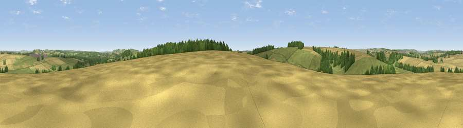

Viewpoint near Odstock
#31055 in England · top 43% of its area beats it · near OdstockWhere it is
The exact computed spot (SU 13925 25625). Click the marker for map links.
The view, rendered

A 360° render of this exact spot computed from the terrain model, tree cover and land cover — summer colours, afternoon light, calibrated against photographs of famous viewpoints. Real trees, hedges and buildings will differ in detail.
The panorama
Grey silhouette: terrain skyline in each direction (720 bearings, Earth curvature and refraction included). Dashed green: skyline with trees (+15 m) and buildings (+8 m) as obstacles. Blue strip: how far the ground is visible on each bearing.
Where the view opens
Wedge length = distance to the farthest visible ground on that bearing (vegetation-aware). Rings at 10, 25 and 50 km.
What fills the view
43% cropland · 41% grassland · 15% woodland · 1% built-up
Angular shares of the visible panorama (visual magnitude), not map area. Landscape diversity 0.46 (0–1 Shannon).
Key numbers
More beautiful places nearby
The staircase of upgrades: each row has a higher view potential than everything closer. Driving times are estimates from straight-line distance, calibrated against real road routing — check an actual route before setting out.
| Place | Direction | Drive | Score |
|---|---|---|---|
| Clearbury Down | SE · 2 km | ~5 min | 53.0 |
| Viewpoint near Bishopstone | W · 6 km | ~13 min | 54.7 |
| Viewpoint near Laverstock | NNE · 7 km | ~14 min | 58.0 |
| Viewpoint near West Grimstead | ESE · 7 km | ~14 min | 62.7 |
| Marleycombe Hill | WSW · 12 km | ~22 min | 63.3 |
| Viewpoint near Martin | SW · 13 km | ~23 min | 64.6 |
| Viewpoint near Cranborne | SW · 13 km | ~25 min | 65.0 |
| Trow Down | WSW · 17 km | ~30 min | 67.5 |
51.02982, -1.80281 · source: screening · position refined by local search. Computed location — check access rights before visiting.